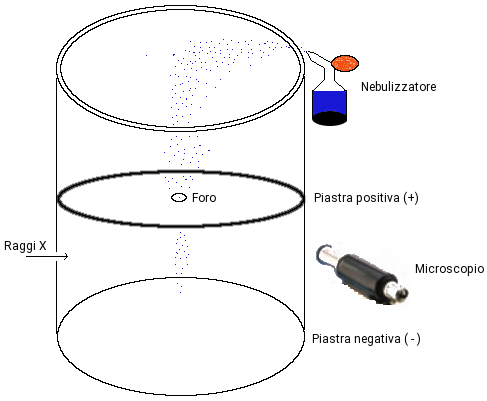

Millikan: misura della carica dell'elettrone
Nel periodo compreso tra 1906-1914 il fisico americano Robert Millikan con un apparato di misura piuttosto semplice riuscì a misurare con una buona accuratezza la carica dell'elettrone. Nell'esperimento di Millikan un nebulizzatore tipo quelli utilizzati per i profumi, formava delle goccioline d'olio molto piccole (circa 1 μm) che cadendo verso il basso all'interno di una camera racchiusa tra due piastre metalliche cariche. L'aria presente in questa camera viene ionizzata da un fascio di raggi X. Gli elttroni espulsi dalle molecole d'aria venendo catturari dalle goccioline d'olio acquistano una carica negativa, qe, dove q è il numero variabili di elettroni acquisiti, ed e la carica dell'elettrone.
Il potenziale negativo della piastra inferiore esercita una forza verso l'alto, contrastando la caduta dovuta alla forza di gravità. Con l'ausilio di un microscopio Millikan e i suoi assistenti potevano osservare la caduta delle singole goccioline. Calibrando il potenziale è possibile sospendere le goccioline per periodi prolungati, raggiungendo l'equilibrio (trascurando l'attrito viscoso) quando la forza elettrica e gravitazionale si uguagliano:
mg = qE
con m la massa delle goccia, E l'intensità del campo elettrico, q il numero di cariche acquisito dalla goccia. Le masse delle singole gocce si calcolano moltiplicando la loro densità per il volume (determinato misurando il diametro con il microscopio). Essendo tutte le altre costanti si arriva a determinare q, la carica delle singole gocce, che sebbene sia diversa per ciscuna risulta essere sempre un multiplo di una data quantità, quella dell'unità di carica:
e = 1.60217646 ⋅ 10−19 C
Conoscendo il valore del rapporto e/me, carica/massa dell'elettrone determinato da Thomson, si giunse a determinare la massa dell'elettrone:
me = 9.1093819 ⋅ 10−19 kg